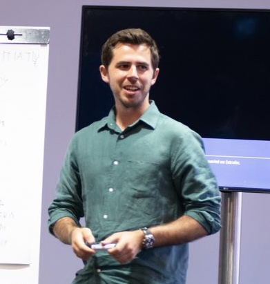

|  | João Bandeira
Currently: VC Investor at Iberis Capital
Based in Lisbon, Portugal
|
07/2021 - Present: VC Investor - Iberis Capital (Portugal) Leading all early-stage technology investments and monitoring portfolio companies
09/2020 - 06/2021: Investment Associate - EDP Ventures (Remote) Led two investments in Series
Name Developed a side project
Book Name [GoodReads]
Title [Link or File]